Module 5: Train Inspection and Detectors
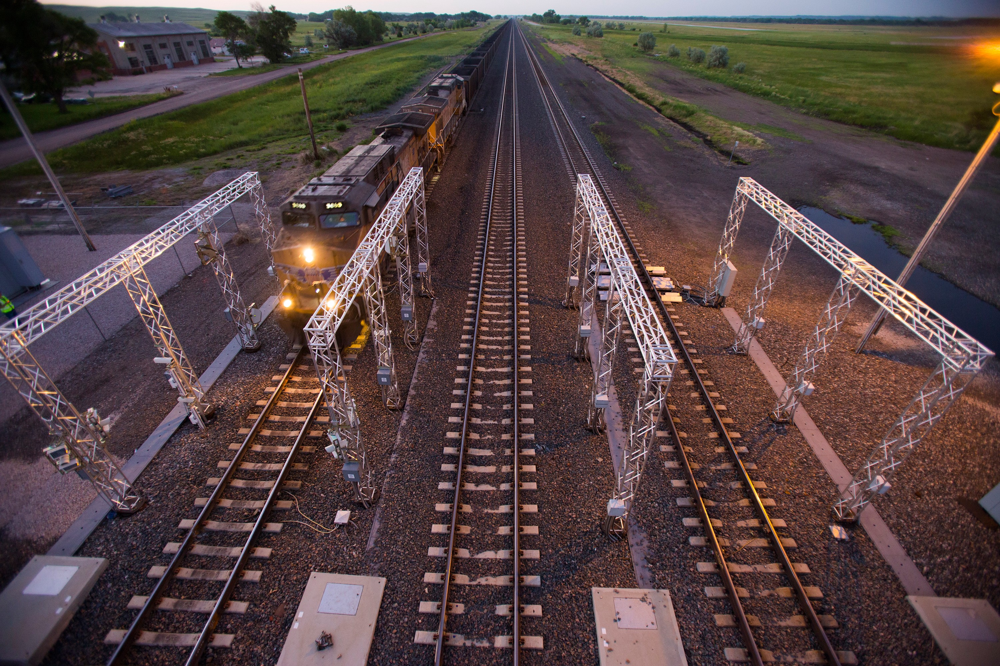
A train passes through a wayside inspection portal equipped with multiple detection systems.
Every train that moves on the railway carries potential hazards — overheated bearings, dragging equipment, flat wheels, and shifted loads. Detecting these problems before they become emergencies is a shared responsibility between train crews and the sophisticated network of Wayside Inspection Systems (WIS) installed along every major subdivision.
Roll-by, pull-by, and running inspections
Hot box, hot wheel, WILD, dragging equipment
How to respond to every detector message
Identifying and handling defects enroute
Learning Objectives
By the end of this module, you will be able to:
Describe the three types of moving train inspections — roll-by, pull-by, and running — and when each is performed.
Identify every major wayside detection device — hot box, hot wheel, dragging equipment, WILD, derailment, and TADS — and explain what each detects.
Respond correctly to WIS alarm messages, including hot box, hot wheel, multiple alarms, and "not working" notifications.
Apply the Markal Thermomelt Heat Stik correctly and interpret the results.
Identify defective conditions on equipment — body, brakes, couplings, wheels, and loads — and take appropriate action.
Apply CROR Rule 102 when a train stops due to an emergency brake application.
Report a set-out with complete and accurate information to the RTC.
Reference documents: CN GOI Section 5, CP GOI Section 5, CROR Rules 102 and 110, and federal Rules Respecting the Inspection of Running Gear (TC pub BI-5916).
You Are Still the Best Detector
The inspection of moving equipment, by other than mechanical means, requires the use of human senses and the application of employee experience, training, good judgment, and equipment knowledge.
Wayside systems measure specific physical parameters at fixed locations. A crew member performing a running inspection can detect:
Leaning cars, dragging equipment, shifted loads, smoke, sparks
Thumping flat wheels, squealing brakes, unusual metallic sounds
Key principle: Never assume the detectors have done your job. Your vigilance between detector sites may be the only thing standing between a minor defect and a major accident.
Conductor's Responsibility
Conductors are responsible to inspect the equipment in their trains as often as possible.
This is not optional — it is a fundamental duty of every conductor on every trip. The obligation exists independent of whether wayside detectors are present on the subdivision.
Who May Inspect?
At locations where certified car inspectors are on duty, they perform the minimum equipment inspection. Where they are not on duty, members of the train and yard crew must perform inspections.
Common misconception: Inspections are NOT skipped when car inspectors are unavailable. The responsibility transfers to the crew.
What Conductors Must Be Able to Do
- Identify any defects or damage to equipment
- Determine whether a repair can be made en route
- Document and report all defects found
- Take protective action when a hazardous condition is discovered
The Cost of a Missed Defect
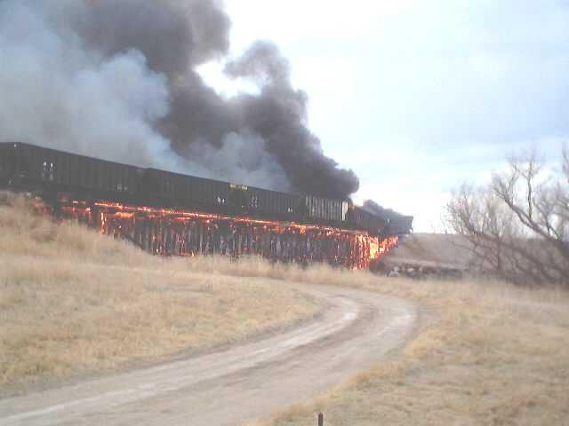
A hot box that went undetected eventually caused this fire.
Dragging equipment that was not caught in time led to derailment.
Equipment defects that go undetected escalate rapidly. A sticking brake causes wheel overheating, which leads to thermal cracking. A dragging piece of brake rigging can catch in switch points and derail the train. An overloaded car can spread the rail.
Your knowledge of defects and their possible consequences can greatly reduce the potential for a serious accident.
Overview of Inspection Types
There are three types of moving equipment inspections. Each is performed under different circumstances and serves a different purpose.
Performed where cars are placed on a train. Also called a pre-departure inspection.
Performed in the application of CROR Rule 110, at crew changes, and when passing another train.
Performed while the train is in motion. Crew looks back at the train from curves.
Each type has specific rules about positioning, speed, and what to look for. The next several pages cover each in detail.
Remember: WIS detectors supplement — they do not replace — crew inspections. You are required to perform all applicable inspection types regardless of detector coverage.
Roll-by / Pre-departure Inspection
A roll-by inspection (also called a pre-departure inspection) is performed where cars are placed on a train — typically at a yard or station before departure.
Purpose
To confirm equipment is in acceptable condition before a movement begins. This is the last chance to identify defects at a slow speed before the train enters main line territory.
What to Look For
- Car body leaning or listing
- Car body sagging downward
- Objects dragging below car body
- Objects extending from sides or ends
- Doors open or improperly secured
- Brake rigging condition
- Coupler and knuckle condition
- Wheel profile and flat spots
- Roller bearing end caps
- Side bearing condition
Pull-by Inspection
A pull-by inspection means the train is moving — being "pulled by" — while crew members or maintenance-of-way employees position themselves trackside to inspect the moving equipment.
When Is It Required?
- In the application of CROR Rule 110
- At passing trains — crews of both trains inspect each other
- At scheduled crew change locations
Positioning
Position a crew member on each side of the train. Crew members must be close enough to see the equipment clearly but remain within a safe distance from the moving train at all times.
Never position yourself closer than necessary. Side-swiping by protruding equipment or shifted loads has caused serious injuries.
What to Look For
Everything from the roll-by checklist, plus special attention to dragging equipment, smoking journals, sparks from wheels, and any load movement.
Pull-by: Solo & Speed Rules
When performing a pull-by inspection, the movement must not exceed 15 mph (24 km/h).
Solo Pull-by Procedure
If only one crew member is available to perform the inspection:
Side 1: A pull-by inspection is performed on one side of the train.
Side 2: A standing inspection is performed on the other side — inspecting from a fixed position as the train passes.
A solo pull-by is less effective than a two-person inspection. Communicate any concerns you observed on the standing side to the RTC so that additional inspection can be arranged if needed.
After the Inspection
If a defect or concern is identified during the pull-by, stop the train and conduct a standing inspection of the affected car(s) before proceeding.
Running Inspection
A running inspection is performed by the crew while the train is in motion. It is an ongoing process throughout the trip — not a single event.
Technique: Looking Back on Curves
Curves are the best opportunity to observe your own train. When rounding a curve, the locomotive crew can look back along the length of the train and observe:
- Smoke or fire from any location
- Sparks from dragging equipment
- Wheels that appear to be skidding rather than rolling
- Cars that appear to be off-centre or leaning
- Any material falling or trailing from the train
Use All Your Senses
Smoke, sparks, visual movement
Thumping, squealing, scraping
Burning rubber, hot metal, smoke
Passenger Car Inspections
Many of the same inspection procedures used on freight equipment also apply to passenger cars. The stakes are higher — every car contains people.
Defects Specific to Passenger Cars
- Car body leaning or listing to the side
- Car body sagging downward
- Car body positioned improperly on the truck
- Object dragging below the car body
- Object extending from the side of the car body
- Side door does not open or close, appears damaged or improperly secured
- End door open, hanging, damaged, or improperly secured
- Brake rigging that is damaged or dragging
- Any component in contact with the rail, tie, or ballast
Any defect that could affect passenger safety must be acted upon immediately. Do not continue movement until the condition is corrected or the car is removed from service.
Knowledge Check 1
When performing a pull-by inspection, the movement must not exceed:
Who will perform a minimum equipment inspection at locations where certified car inspectors are NOT on duty?
If only one crew member is available for a pull-by inspection, what is the correct procedure?
What Are Wayside Detection Systems?
Wayside Inspection Systems (WIS) are technology systems placed at regular intervals along railway tracks that automatically scan passing trains for defects and hazardous conditions — without the train stopping.
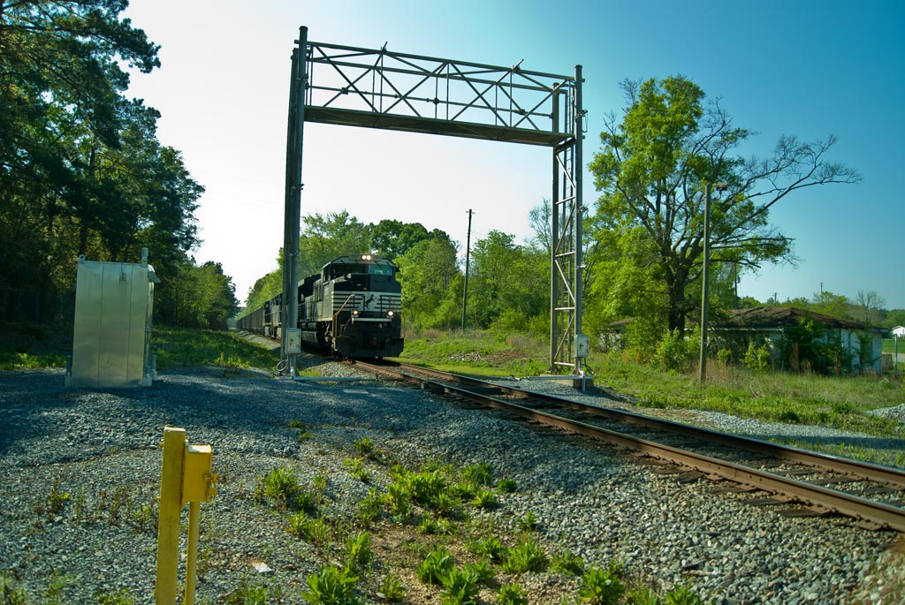
A typical wayside detection installation showing detector housing and overhead gantry.
Most railways in Canada use these systems to facilitate the safe and efficient movement of trains. They are designed to detect or identify a range of potential hazardous conditions and notify crew members directly of their results.
The locations of Wayside Inspection Systems are indicated in the Time Table station column or separately in subdivision footnotes or special instructions. Always know where the detectors are on your subdivision.
How WIS Notifies the Crew
When a defect or hazard is detected, the train crew may be notified through one or more of the following channels:
A distinctive tone is transmitted over the designated standby radio channel immediately upon detection.
A computer-generated voice message follows the tone, identifying the detector location, type of defect, and axle number.
At some sites, a defect detection will change the signal to stop the train before proceeding further.
The Rail Traffic Controller monitors WIS data and may contact the crew directly with instructions or additional information.
Avoid using the designated radio standby channel while your train is passing over a detector. Other trains should also avoid the standby channel while a train in the vicinity is passing over a detector.
What Is a Hot Box?
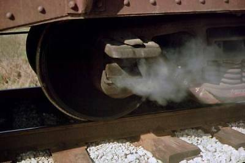
Smoke pouring from an overheated friction bearing — a classic hot box.
Older railway equipment wheels used a type of wheel bearing called a friction bearing (also called a plain bearing). These bearings were contained in a square box at the end of each axle.
When the lubrication in these boxes failed — due to overheating, contamination, or lack of maintenance — the metal-on-metal friction caused the box to become dangerously hot. This overheated bearing box was called a Hot Box.
It was a common occurrence for this type of bearing to catch fire and burn, potentially destroying the car and adjacent cars, igniting cargo, and causing derailments.
Although modern railways have largely replaced friction bearings with roller bearings, roller bearings can also overheat — and are now what hot box detectors are primarily designed to find.
Roller Bearings & Journals
A journal is the general term for a wheel bearing assembly on a railway car axle. Modern freight and passenger equipment uses roller bearings — which are far more reliable than the old friction bearings — but they are not failure-proof.
Why Roller Bearings Fail
- Contamination by water, dirt, or debris
- Loss of lubricant (grease degradation)
- Impact damage from flat wheels
- Missing or loose end bolts
- Overloading beyond rated capacity
- Manufacturing defects
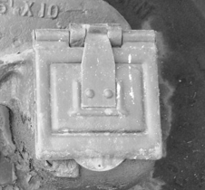
Roller bearing end cap on a freight car axle.
When inspecting a suspected hot journal, never touch the bearing or adapter with bare hands. Use a proper temperature measuring device (Markal Heat Stik). Temperatures can exceed 200°C.
Hot Box Detectors
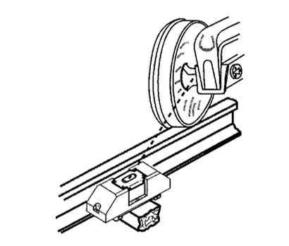
A hot box detector scanner mounted at track level, positioned to scan the underside of passing wheel assemblies.
A Hot Box Detector (HBD) measures the temperature difference between the outside air temperature and the heat radiated from the journal box as each axle passes over the sensor.
HBDs are installed at track level, typically between the rails or adjacent to them. As a train passes, the scanner records an infrared heat signature from every axle journal — both north (left) and south (right) sides.
Hot box alarms can also detect overheated traction motor suspension bearings and sticking brakes.
Hot Wheel Detectors
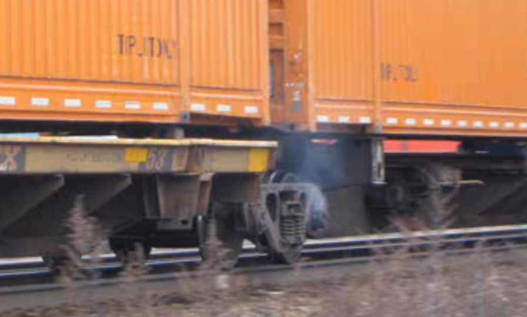
Smoke from a sticking brake — exactly what hot wheel detectors are designed to catch.
A Hot Wheel Detector (HWD) measures the temperature difference between the outside air and the heat radiated from the wheel rim — not the bearing.
HWDs are used to detect:
- Sticking or dragging brakes — a brake shoe that fails to release generates intense wheel heat
- Hand brakes left applied — a common cause of wheel damage and fire
Combined detectors: Hot Box and Hot Wheel detectors are frequently combined in a single installation. The talker will specify which type of alarm was triggered.
The talker uses a single tone for hot wheel alarms, and a double tone for hot box and dragging equipment alarms — so crew members can immediately know the type of defect before the voice message.
Dragging Equipment Detectors
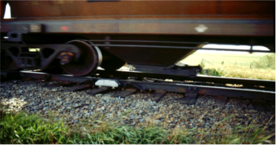
Brake rigging hanging below a car — a dragging equipment hazard.
A Dragging Equipment Detector (DED) monitors equipment or lading defects that are dragging along the ground in close proximity to the rail.
When a train passes over the detector, any equipment hanging below the normal clearance level strikes the detector paddle and triggers an alarm with a double tone and talker message identifying the axle location.
What Causes Dragging Equipment?
Brake rigging that has come loose, broken hanger rods, dropped brake shoes, broken draw bars.
Strapping, chains, tarps, or cargo that has come unsecured and is dragging below car level.
Trains operating on adjacent main tracks approaching a detector that is broadcasting a dragging equipment alarm must stop immediately using a split service reduction — unless it can be confirmed their movement will not be affected.
Wheel Impact Load Detectors (WILD)
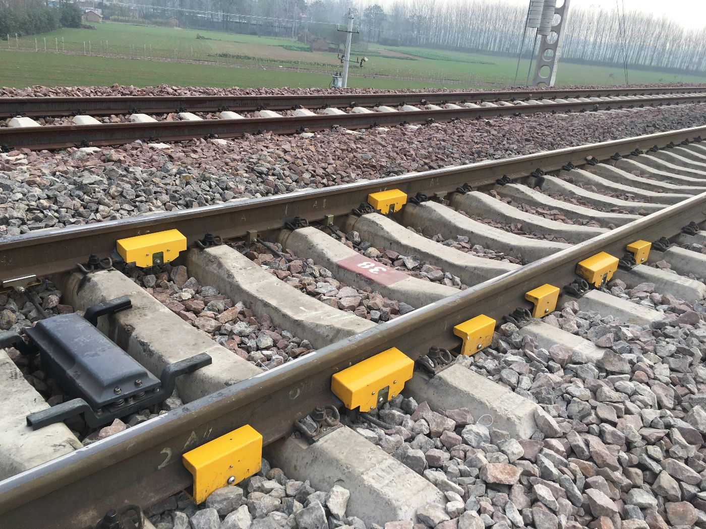
Yellow WILD sensor assemblies installed between the rails at track level.
A Wheel Impact Load Detector (WILD) — also known as a Flat Wheel Detector — senses excessive wheel impacts transmitted through the rail, caused by flat or worn spots on wheels.
WILDs use strain-gauge technology built into special rail sections to measure the dynamic impact force of every wheel as it rolls through the site. Normal wheels roll smoothly; a flat spot creates a characteristic spike in impact force.
WILDs measure performance in motion — giving more information about a wheel's condition than a static visual inspection.
A flat spot 2½ inches or more in length, or two adjoining spots each 1 to 2 inches in length, is considered defective.
Derailment & Truck Performance Detectors
Derailment Detectors (DD)
Similar to a dragging equipment detector in function. Two types:
Bars fixed to railway ties that break when struck by derailed equipment. Triggers continuous talker alarm. No axle count provided.
Installed lower than DED paddles. Only communicates alarm conditions with axle count. Sends train tape to office.
Lateral Rail Movement Detectors (LRMD)
Detects excessive lateral (sideways) force on the rails — caused by: car body positioned improperly on the truck, sagging car body, uneven or shifted load, or broken truck components (side frame, springs).
Truck Performance Detectors (TPD)
Built into S-curves to monitor truck performance. Uses strain-gauge technology similar to WILD, measuring lateral and vertical forces as cars navigate the curve.
In many cases, a dragging equipment detector will serve the same protective purpose as a derailment detector.
Advanced Technologies
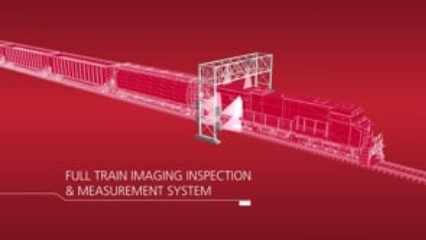
A full train imaging and measurement system scans every car in real time.
Modern railways integrate multiple detection technologies into intelligent systems that go far beyond simple alarm thresholds.
Monitors sounds emitted by wheel bearings as they pass. Failing bearings produce a unique acoustic signature detectable before visible damage occurs.
Determines if rail cars are overloaded or unbalanced at line speed — preventing derailments and extending the life of track and equipment.
Many railways now use artificial intelligence to correlate data from multiple detector types to predict and warn of potential problems before they become critical.
Located at entrances to tunnels and restricted-clearance points. Triggers alarm when a car or load exceeds maximum width or height.
Knowledge Check 2
Which type of detector measures impact loads from flat or worn wheel spots?
Where will the location of Hot Box and Dragging Equipment Detectors be indicated?
A TADS (Trackside Acoustic Detection System) detects defects by:
Monitoring Radio Channels
Train crews are responsible to monitor radio channels and/or any other system that may be used to convey a WIS message. Crews must respond immediately to the notification as it is received.
Why Immediate Response Matters
A hot box alarm indicates a bearing that may be within minutes of catastrophic failure. A dragging equipment alarm may indicate hardware about to derail the train at the next switch. Every second of delayed response increases risk.
Talker Message Timing
Messages from the talker should be heard within 45 seconds after the entire train has passed over the detector. If no message is received after the entire train has passed, the crew should consider the detector to be malfunctioning.
Do not use the designated radio standby channel while your train is passing over a detector. You may block the alarm transmission intended for your own train or another nearby train.
"No Alarm" Message
When the entire train has passed with no defects detected, the talker broadcasts a "No Alarm" message. This is good news — but it is not a green light to stop paying attention.
Action: None required. Continue normal operation.
Reading the No Alarm Data
| Number in Message | What It Means |
|---|---|
| Minus 10 | Outside ambient temperature (–10°C in this example) |
| Five-Four-Six (546) | Number of axles detected (may vary by ±1) |
| Four-Two (42) | Speed (mph) when train entered the site |
At some sites an abbreviated "No Alarm" message is used: "(mileage) — No alarm." If a defect is present or the detector is malfunctioning, the complete message will be provided instead.
A crew can receive a "No Alarm" message and still receive instructions from the RTC to stop and inspect. Always follow RTC instructions — the RTC has additional data from the office system.
Hot Wheel Alarm — Response
Required Response — Step by Step
Commence a controlled stop using a split service reduction immediately upon receipt of the alarm.
A pull-by of no more than 10 mph may be made — up to the point indicated in the talker message — if there is no sign of a derailment. The pull-by must NOT be made over a switch in a facing-point direction.
A crew member inspects all wheels on the suspect car.
Confirm the car number with the RTC.
Inspect all wheels on the identified car. If all appear normal, inspect at least 12 axles ahead and behind the identified car.
Check axle bearing and wheel integrity on both sides before returning to the head end.
Hot Box Alarm — Response
The Hot Box alarm response follows the same procedure as the Hot Wheel alarm — with one critical addition: the suspected car's journal must be checked using a Markal Thermomelt Heat Stik.
Key Differences from Hot Wheel Response
| Step | Hot Wheel | Hot Box |
|---|---|---|
| Stop & pull-by procedure | ✓ Same | ✓ Same |
| Inspect 12 axles each side | ✓ Same | ✓ Same |
| Apply Markal Heat Stik to journal | ✕ Not required | ⚠ Required |
| Confirm car number with RTC | ✓ Same | ✓ Same |
Never touch the journal or adapter with bare hands when inspecting a hot box alarm. Use only approved temperature-measuring devices.
The Markal Thermomelt Heat Stik
Markal Thermomelt Heat Stiks are temperature-indicating crayons that melt when the temperature of the surface they are applied to reaches the crayon's designated melting point.
The Correct Crayon for Freight
The prescribed crayon for freight roller bearings melts at 93°C / 200°F.
If the crayon melts — leaving a wax-like shiny smear — the bearing temperature exceeds 93°C and the car must be set out immediately.
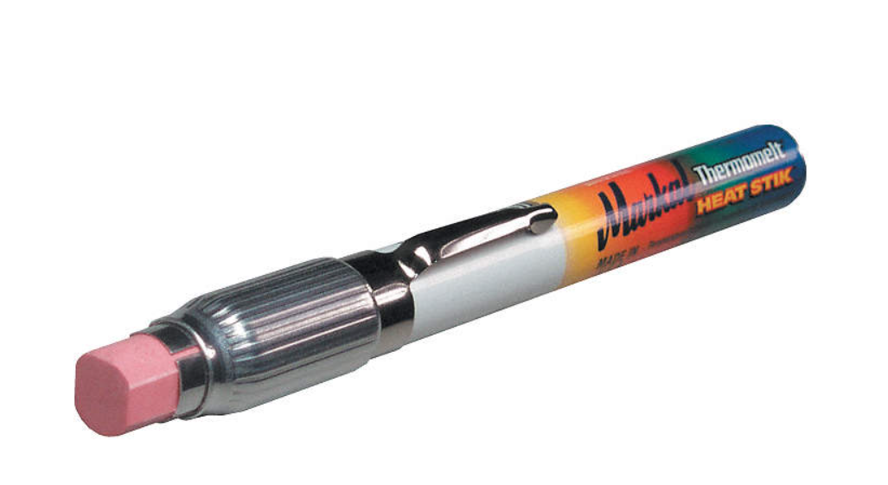
A Markal Thermomelt Heat Stik — standard equipment for every conductor.
If the Heat Stik does not melt, this confirms the bearing is below threshold. However, the inspector must still report results to the RTC and continue to monitor. A bearing can still deteriorate further down the line.
Applying the Heat Stik
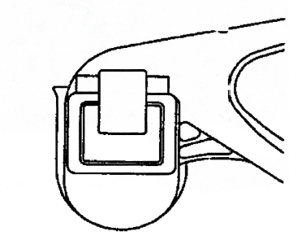
The correct application points on a roller bearing assembly.
Step-by-Step Application
Locate the bearing: Identify the axle specified by the talker message. Count from the front of the train.
Apply to the outer ring cup (bearing sleeve): Make a marking on the outside of the bearing cup. This is the primary test point.
Apply to the roller bearing end cap: Make a second marking on the end cap as an indication the bearing has been inspected.
Interpret the result: If the marking melts (shiny wax smear) — set out the car. If it does not melt — report results to RTC and continue with caution.
Do NOT apply to the adapter. Do NOT apply to the face of the axle end. The correct location is the face or side of the outer ring cup or sleeve.
Multiple Alarms
How Multiple Alarms Are Transmitted
If there are multiple defects on the same train, the talker transmits the applicable tone and message every time a defect is detected as the train passes. The final message will say "Multiple Alarms" — the axle number will NOT be included in the final summary.
Required Action
Stop the train immediately using a split service reduction.
Contact the RTC to determine the nature and location of each defect.
If unable to contact the RTC, perform a standing inspection of the entire train.
Dragging Equipment Response
Required Response
Stop immediately using a split service reduction. Dragging equipment can derail at a switch at any moment.
Inspect the car identified plus at least 12 axles ahead and behind the identified car.
Identify and secure any component that is hanging, dragging, or otherwise outside normal clearance.
Report to the RTC and await instructions before proceeding.
If the train is stopped with equipment suspected to be dragging, do not move the train until the defect is confirmed to have been identified and either secured or the car set out.
When a train stops before the entire movement has passed the detector, the front and rear portions are treated as two separate trains — separate messages will be received for each portion.
WIS Malfunctions
There are several ways a Wayside Inspection System may malfunction. The required response depends on the type of failure.
| Condition | Required Action |
|---|---|
| "NOT WORKING" with alarm message | Stop immediately. Contact RTC. If RTC unreachable, perform standing inspection of entire train. |
| No message received after train passes (45-sec rule) | Treat detector as malfunctioning. Governed by malfunction rules. |
| WIS out of service by General Bulletin Order (GBO) | Follow specific instructions in the GBO. Advise RTC. |
| Partial failure | Governed by instructions in the GBO or from RTC. |
| Two or more HBDs not working | Speed restriction may apply — consult GBO and RTC instructions. |
When a talker indicates a defect while a train is passing at 5 mph or less, the axle count in the message may be incorrect. In this case, a standing inspection of the entire train must be performed after stopping.
Video: Changing a Brake Shoe
Brake shoes are a critical component inspected during every equipment check. A missing, broken, or worn-out brake shoe key can cause the shoe to dislodge — creating a dangerous dragging equipment hazard.
This video demonstrates the process of changing a brake shoe — helping you understand the component you'll be inspecting, the failure modes to watch for, and the level of mechanical work involved in a road repair.
Key Inspection Points — Brake Shoes
A dislodged or missing brake shoe key is a defect. Move the car carefully to the first available location where it can be set off.
Complete brake rigging down requires the car to be set off. Wiring it temporarily to the frame is NOT an acceptable permanent repair.
Knowledge Check 3
Which type of Thermomelt Heat Stik is prescribed for use on any suspected freight journal?
Where should the temperature measuring device be applied on a freight roller bearing to test for overheating?
Could a crew receive a "NO ALARM" message and later receive instructions from the RTC to stop and inspect?
Hazardous Conditions — Taking Action
When an inspection reveals a hazardous condition that may affect safe operation, the qualified person in charge of the train shall take appropriate action to eliminate potential danger.
Four Options — in Order of Preference
Correct the condition — if a safe road repair is possible, make it immediately.
Reduce speed — if the defect does not require immediate set-out, reduce speed and proceed to the first location where repair is possible.
Remove the defective car — set the car out and report the defect to the RTC.
Take such other action as is necessary — apply judgment to ensure continued safe operation.
Your knowledge of defects and their consequences is what allows you to make the right call. The next pages cover specific defects and the required actions for each.
Body & Frame Defects
| Defect Observed | Possible Cause | Action |
|---|---|---|
| Car leaning or listing to the side | Twisted centre sill; missing or broken side bearing | Inspect centre plates and side bearings; set out if confirmed |
| Car sagging downward | Broken centre sill; broken bolster | Set out immediately |
| Car off-centre on truck | Centre plate out of bolster casting | Check underside over each truck; set out if confirmed |
| HIGH/LOW coupler condition | Broken or missing components causing height mismatch | Investigate both cars; may indicate structural failure |
If in doubt, take the safe course — place a bad order tag on the car and set it out at the first available location. Do not rely on "it looks okay" for structural defects.
Side Bearings
Side bearings support the car body on the truck bolster and control rocking motion. A missing or broken side bearing is a serious structural defect that can cause the car body to shift laterally during transit, potentially fouling clearances or derailing.
Brake Rigging Defects
Action: The train may proceed carefully to the first location where the car can be set off. The rigging must NOT simply be wired up and left — the car must be set out for proper repair.
Action: Move the car carefully to the first available location where the car can be set off. A missing key means the brake shoe can fall out — creating a dragging equipment hazard.
Sticking Brakes
A sticking brake causes the wheel to drag rather than roll freely. This generates intense heat that causes thermal cracking and shelling of wheels. Over time a sticking brake can also lead to a journal overheating. Signs include:
- Smoke from beneath the car
- A burning smell (rubber, metal)
- A hot wheel alarm from a WIS detector
- Flat spots developing on the wheel
Thermal cracks from sticking brakes are a leading cause of wheel failures and derailments. Never ignore signs of a dragging brake.
Coupling & Knuckle Defects
| Defect | Consequence if Not Fixed | Required Action |
|---|---|---|
| Cracked knuckle | Train separation; derailment of trailing equipment | Must be replaced before movement |
| Drooping coupler or missing carrying arm | Damage to other car components; train separation or derailment | Set out; repair before movement |
| Bent centre sill and broken striker | Structural failure under buff load; derailment | Car must NOT be lifted or moved |
| Badly bent or broken uncoupling lever | Difficulty uncoupling; possible employee injury | Set out at first available location |
A car with a bent centre sill and broken striker must NOT be lifted. This is a hard rule — the structural integrity of the car is compromised and buff/draft forces could cause catastrophic failure.
Wheel & Bearing Defects
Skidded (Flat) Wheels
Wheels are defective when: the flat spot is 2½ inches or more in length, OR when two or more adjoining spots are each 1 to 2 inches in length.
Flat spots cause repeated impact loading on the rail — damaging both track and the car's bearings. The thumping sound they produce is audible at low speeds.
Roller Bearing End Bolt Defects
Action: Apply a Thermomelt Heat Stik to confirm bearing temperature. If running hot — set out. Car must not move further until inspected by a certified car inspector.
Severe heat from sticking brakes can cause thermal cracks and shelling of the wheel tread. Any visible cracking or missing wheel tread material = immediate set out.
A proper temperature measuring device must be used in addition to a visual inspection when inspecting a suspected hot bearing. Visual alone is insufficient.
Load & Door Defects
| Defect | Action Required |
|---|---|
| Non-dimensional load extending beyond side or end; part missing | Set out car; advise RTC immediately |
| Protruding steel band on load | Correct immediately; inspect load to ensure it is adequately secured |
| Insecurely attached door | Secure it — or set out / do not lift the car |
| End door open/damaged/improperly secured | Secure or set out before movement |
A protruding steel band is not merely a cosmetic issue — it can catch on structures, switch equipment, or personnel standing near the track.
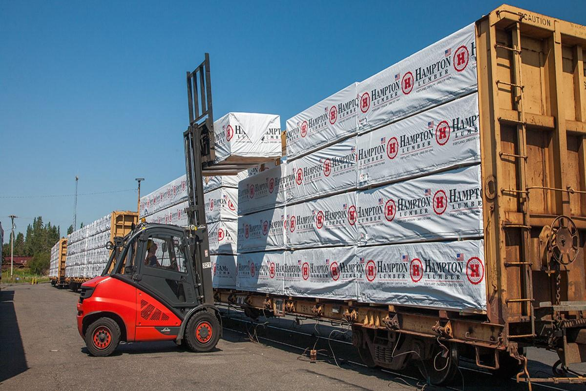
Flatcar loads must be inspected for shifting, protruding banding, and clearance issues.
Bad Order Cards
A Bad Order Card is a physical tag placed on a defective car to identify it as out of service and indicate the nature of the defect. It must be placed at a conspicuous location on the car.
When to Apply a Bad Order Card
A bad order card is applied whenever a car is set out for a defect that cannot be corrected enroute. The card communicates to yard crews, inspectors, and mechanical staff that the car requires attention before returning to service.
What Information Goes on the Card
- Date of defect discovery
- Car initial and number
- Location where set out
- Nature of defect (description)
- Name of employee setting out the car
The bad order card is the physical equivalent of the defect report submitted to the RTC. Both are required when setting out a car. Never leave a defective car without a bad order card attached.
Knowledge Check 4
While inspecting a car, you notice it is leaning or listing to the side. What might this indicate?
When are skidded (flat) wheels considered defective?
May a car with a bent centre sill and broken striker be lifted into a train?
Emergency Brake Applications
Your train is stopped by an unexpected emergency brake application. The cause is unknown. What is your first action?
Priority 1: Check for Track Obstruction
Before anything else, determine whether the emergency brake application may have resulted in the obstruction of the main track — or an adjacent main track where movements may be approaching.
This is critical because an obstructed main track is an immediate danger to other trains, and protection must be established without delay.
Causes of Emergency Brake Applications
Broken coupler, failed knuckle — train parts company and pulls the brake pipe apart.
Air hose failure, emergency valve activation, or brake pipe damage.
A derailed car may trigger the emergency application as it pulls the brake pipe or triggers a derailment detector.
CROR Rule 102 — Emergency Stop Protection
The crew of a movement stopping as a result of an emergency brake application, or other abnormal condition which may cause an adjacent main track to be obstructed, must:
Immediately transmit a radio broadcast on the standby channel: "EMERGENCY, EMERGENCY, EMERGENCY — (movement) on (designation of track) at (location). All movements on (adjacent track) hold clear."
Determine the cause of the emergency stop and assess the extent of any obstruction.
Protect the adjacent track using flagging, fouling point protection, or such other means as are required.
Contact the RTC to report the situation and await instructions.
The emergency radio broadcast must be immediate — before you even know the cause. A train on the adjacent track may be approaching at full speed and needs advance warning now.
Unusual Slack Action
Your movement was stopped by an emergency brake application. Brake pipe pressure on the rear car recovers, but when you attempt to restart, you notice unusual slack action. Must the movement be stopped and inspected?
Yes. Unusual slack action after an emergency application is a strong indicator of a train separation — a broken coupler or knuckle somewhere in the train. The movement must be stopped and a thorough walking inspection performed.
Why Slack Action Signals a Problem
After an emergency brake application, when all brakes release uniformly and the train is intact, restart should feel normal. Unusual slack — excessive run-in, run-out, or a "free" feeling — means part of the train is not behaving as a single connected unit. This must be investigated before further movement.
Never assume unusual slack is "just the train settling." Walk the train. Confirm coupler integrity before proceeding.
Knowledge Check 5
What is the FIRST action when a train is stopped by an emergency brake application?
Your train is stopped by an emergency brake application. Brake pipe pressure recovers on the rear car, but you notice unusual slack action when restarting. Must the movement be stopped and inspected?
Reporting to the RTC
When a car is set out, the following information must be provided to the RTC:
The date the defect was detected.
Description of the defect observed — be specific.
The reporting mark of the car (e.g., CN, CP, TTGX).
The full car number as stencilled on the car body.
Which axle, which side, which component is defective.
Always confirm the car number with the RTC after a detector alarm. The RTC can cross-reference the axle count from the detector with the train's consist to verify the car ID.
Additional Information Required
The RTC may require additional information beyond the minimum set-out report. Be prepared to provide:
| Information | Why It Matters |
|---|---|
| Where the car was set out / how it is being handled | Allows dispatch to track the car and arrange repairs |
| For hot box set-out: was the hot brake end identified as leading or trailing? | Helps mechanical staff identify which end to inspect first |
| Was an approved temperature measuring device used? | Confirms the inspection was properly conducted |
| Who detected the problem / how was it detected? | Documents the detection method (WIS, crew visual, etc.) |
| Time the defect was detected | Establishes timeline for investigation |
| Weather and visibility conditions | Relevant context for the inspection quality |
Complete reporting protects you and ensures the car is properly tracked and repaired before returning to service. Incomplete reports lead to the same defect being missed again.
Where Detectors Are Located
Knowing where detectors are on your subdivision is part of your job. This knowledge allows you to anticipate messages, maintain radio discipline, and understand the gaps in coverage where extra crew vigilance is needed.
WIS locations are listed in the station column of the time table for each subdivision. Mileage and detector type are shown.
Some standalone detectors or special-function detectors are listed separately in footnotes or in General Bulletin Orders.
Hazard Detectors
In addition to WIS equipment defect detectors, railways also maintain hazard detectors along the right-of-way:
- Slump, Washout, High Water, and Debris Flow Detectors
- Avalanche Detectors (mountain territory)
- Bridge Scour Detectors
- Slide Detector Fences
- Wind Detectors (elevated bridges, exposed territory)
- Fibre Optic Break Detectors
Module Summary
Roll-by, pull-by (max 15 mph), and running inspections are all required tools. Solo pull-by = one side pull-by + one side standing.
HBD, HWD, DED, WILD, Derailment, LRMD, TPD, TADS, WIM, Dimensional. Locations in the time table.
Hot box → stop, pull-by ≤10 mph, inspect ±12 axles, apply 93°C Heat Stik. Hot wheel → same without Heat Stik. Multiple → stop, call RTC.
Cracked knuckle = replace before move. Bent sill+broken striker = do not lift. Brake rigging down = set out. Flat spot ≥2½" = defective.
First: check for track obstruction. Broadcast Rule 102 emergency immediately. Unusual slack = stop and inspect.
Date, defect, car initial, car number, location of defect — all required when setting out a car.
You are the final safety layer. Technology detects defects at fixed locations. You detect them everywhere else, every shift, every trip.
Pre-Exam Instructions
The pre-exam is NOT for marks. It is a learning tool. Research shows that retrieval practice immediately after instruction dramatically improves long-term retention. (Make It Stick, Brown, Roediger & McDaniel, 2014)
Instructions
- Work with your team — discuss every answer together
- You may use written materials to find answers
- No cell phones, computers, or AI during the exam
- Time limit: 20 minutes
- When finished, hand your exam to the instructor
- You will be given another team's exam to mark
Topics Covered
- Inspection types and procedures (pull-by speed, solo procedure)
- WIS device identification and function
- Responding to hot box, hot wheel, and dragging equipment alarms
- Markal Heat Stik application and thresholds
- Defect identification and required actions
- Emergency brake procedures (CROR Rule 102)
- Reporting requirements
You are ready. You have covered every rule, every detector, and every defect. Trust your training.
References
| Source | Description |
|---|---|
| CROR Rule 102 | Emergency Stop Protection. Transport Canada. |
| CROR Rule 110 | Pull-by Inspection requirements. Transport Canada. |
| CN GOI Section 5 | Equipment Inspection, Hazard Detection, Warning Systems (Dec 2015). CN Rail. |
| CP GOI Section 5 | Equipment Inspection procedures. CP Rail. |
| TC Publication BI-5916 | Rules Respecting the Inspection of Running Gear. Transport Canada. |
| CN QSOC — Inspections | Quality Standards of Conduct for train inspections. CN Rail. |
| Make It Stick | Brown, Roediger, McDaniel (2014). Harvard/Belknap Press. The learning science behind this module's design. |
Module 5 complete. Every rule you have learned exists because of real events with real consequences. The next time you perform an inspection, you are not just following procedure — you are preventing the next incident.